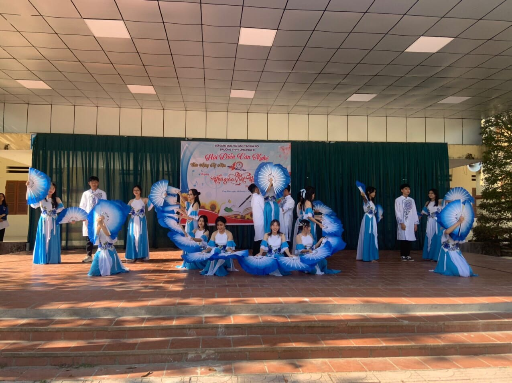
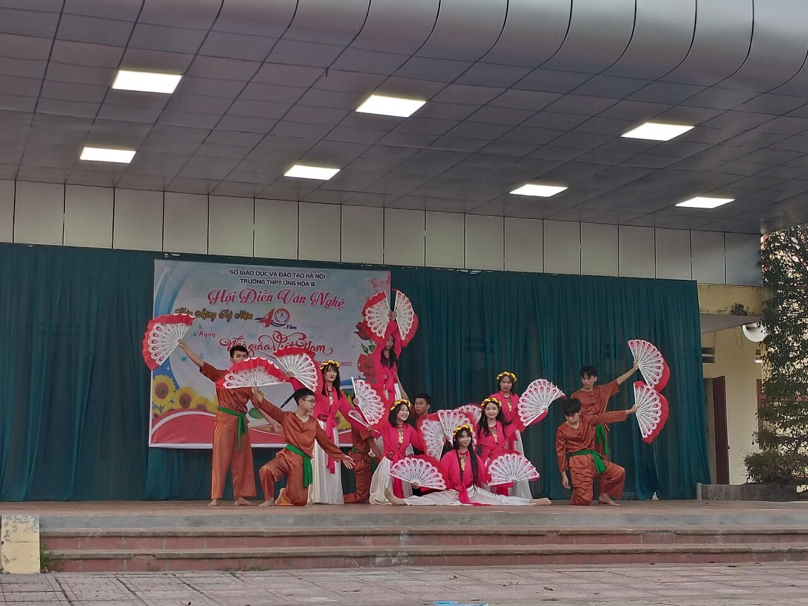
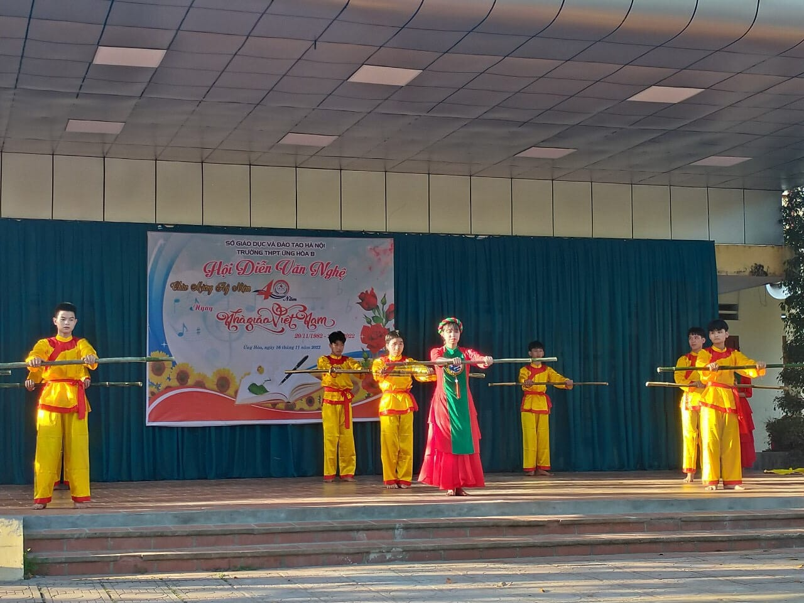
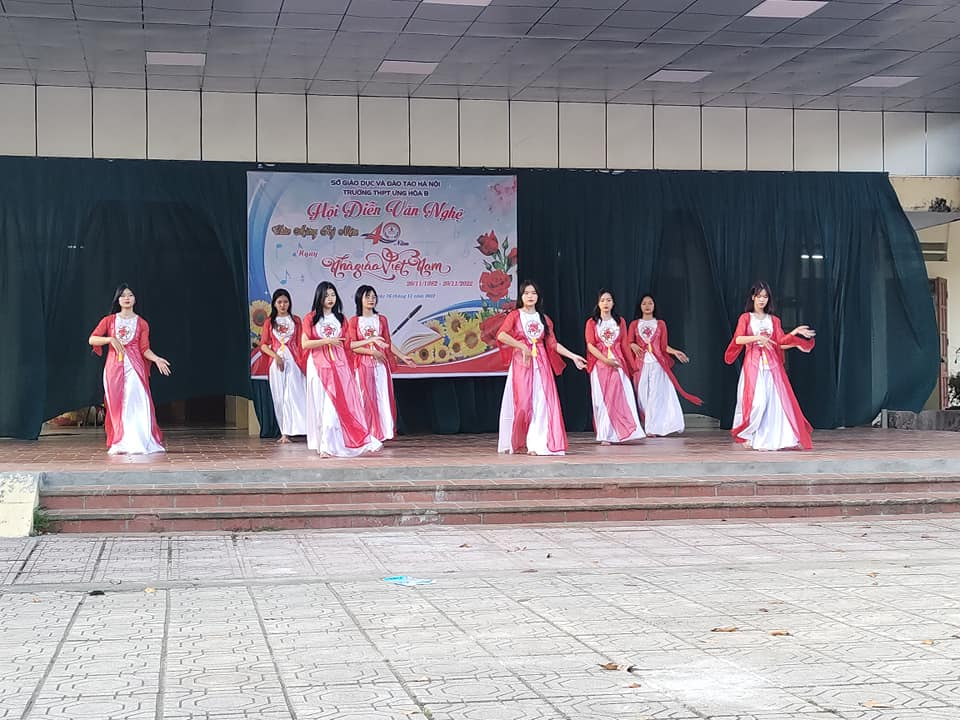

Kết quả Hội thi văn nghệ chào mừng kỉ niệm 40 năm ngày Nhà giáo Việt Nam (20/11/1982 - 20/11/2022)
Hội thi văn nghệ chào mừng kỉ niệm 40 năm ngày Nhà giáo Việt Nam(20/11/1982 - 20/11/2022) tại Trường THPT Ứng Hòa B đã kết thúc hết sức tốt đẹp trong buổi chiều ngày 16/11/2022. BTC ghi nhận sự nỗ lực các em học sinh.
   